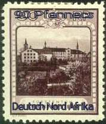
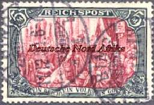
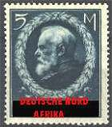
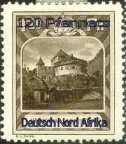
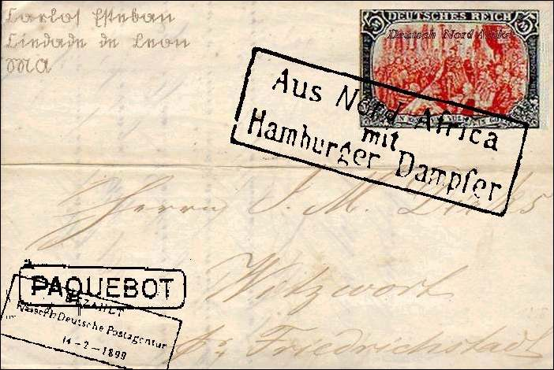

|
Created:
11/19/01. Revised: 01/07/06. |
|
|
by Kristian Kyhl |
On the official SNA Page, stamps of neighbouring regions are depicted. The two middle ones from German North Africa are clearly fake! The right one I will come back to, my studies only covers the prewar postal history of DNA so far.
 |
 |
 |
 |
The middle left stamp is actually
quite famous, as these fakes led to the downfall of the mayor in the German
town Bremen (*). In 1905 a rundown carpenter from Bremen, Ernst Schlick,
'manufactured' a number of these fake and extremely rare stamps for the
usual reasons (how many is not known). He went around town and sold some of
the stamps to different stamp dealers for a considerable amount of money.
Then he made his mistake; as a little present he gave one of the stamps to
his cousin, a successful young merchant. Two years later the young man
got into some financial problems, and he went to see his very good friend
(maybe more than that, if you read between the lines in "Realpolitik im
Kaiserreich" but starkly denied in "Die Schlick F·lschungen")
the mayor of Bremen, with whom he at that time had done some business. The
mayor was an enthusiastic philatelist and was eager to get the stamp into
his collection, but did not have nearly enough cash, so what to do? The
merchant needed the money to pay his debt, so the mayor decided to lend the
money from the town cashbox, but he sincerely promised to himself to pay
them back as soon as he could visit the local bank the next day.
When people do things like this it
often goes wrong; surprise revision! The cash deficit was discovered at once
and the only other one with a key to the box, the town treasurer had been
occupied in the south of Bavaria for quite some time. Scandal! The rather
right wing newspapers of the town (the mayor was Social-Democratic) got wind
of the story and the previous years stories of alleged visits to brothels,
connections with a Holsteinian underground Movement for the liberation of
'South Denmark' were blown up again (the former most probably utter
nonsense, the latter could be true, due to the mayor having studied in
Copenhagen).
This soon led the police to the young Merchant and ultimately to Schlick
himself.
The forgery itself is actually a bad one. In 1897 a new definitive set for
the German Empire was prepared by the Postal Authority. They started
printing the first issue, but the issue never went out in the country. The
government could not allow the country notation "Deutsches Reich",
as the states W·rttemberg and Bavaria still printed their own stamps,
therefore the notation "Reichspost", should make the transition to
a single German Postal Authority more 'edible' to the two stats. Due to the
fire at the "Preussiche Staatsdruckerei" and political reasons
these stamps were not issued before 1900, and by reusing the old plates the
notation "Deutsches Reich" could finally be used from April 1st
1902. To get back to German North Africa, a shipment of the 'wrong' stamps
had already been shipped to the colony, in order to have a unified First Day
Issue, and it was decided to let them use the stamps up until new ones could
be delivered. Therefore; the SNA site stamp is a "Reichspost"
stamp, but it should have been a "Deutsches Reich" stamp.
The stamp is perforated; not likely, only one privately perforated is known (perforated 11x11, and can be seen at the Postal Museum in Berlin), they all came to DNA imperforated. Spelling error; it is called Deutsch Nord Afrika, and not Deutsche Nord Afrika.
The cancellation states Elbing. Right! There is a town in Germany called Elbing, so this is most probably stamped here. The little port of Elbing in DNA only used cancels where a "* (SNA) 1" was placed in the lower half of the ring, and the post office was first opened in 1904!!!!
Here is a link to a genuine cover, for all to see how the stamp ought to look: (link replaced by the image, V.M.)

Incidentally this cover was send by
the SNA consul Carlos Esteban, do any of you know why he used his SNA
address as return address?
(*) "Die Schlick F·lschungen, Schlerbermeier Verlag GmbH, 1934
K·nigslutter" and "Realpolitik im Kaiserreich, Stentner Verlag,
1954
Bremen"
|
Created:
11/19/01. Revised: 01/07/06. |
|